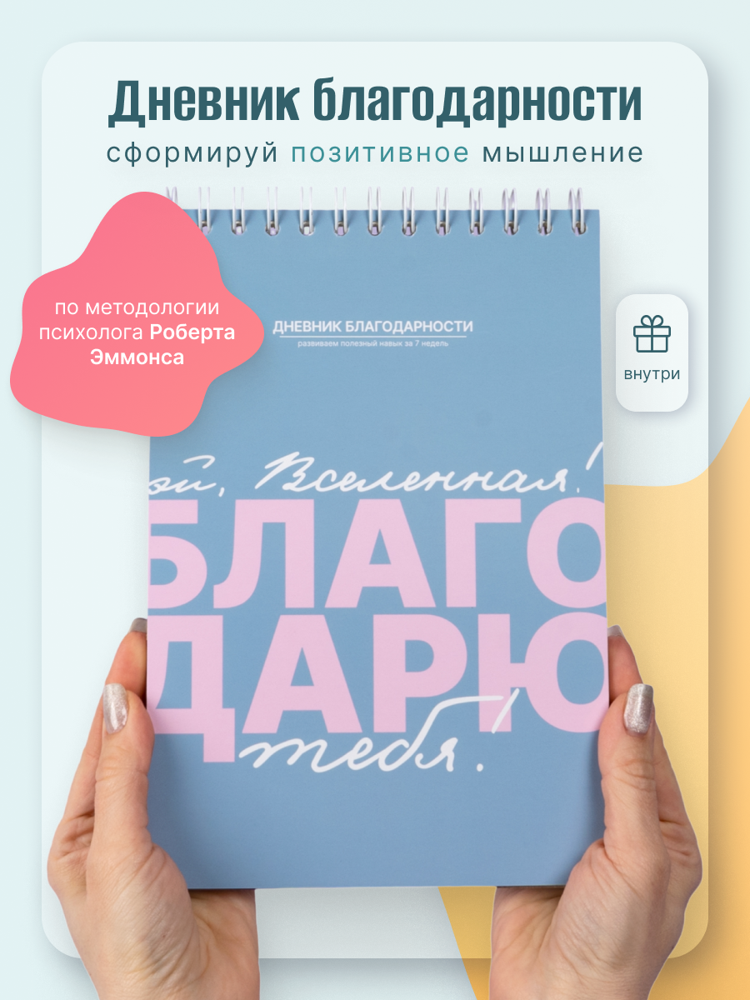
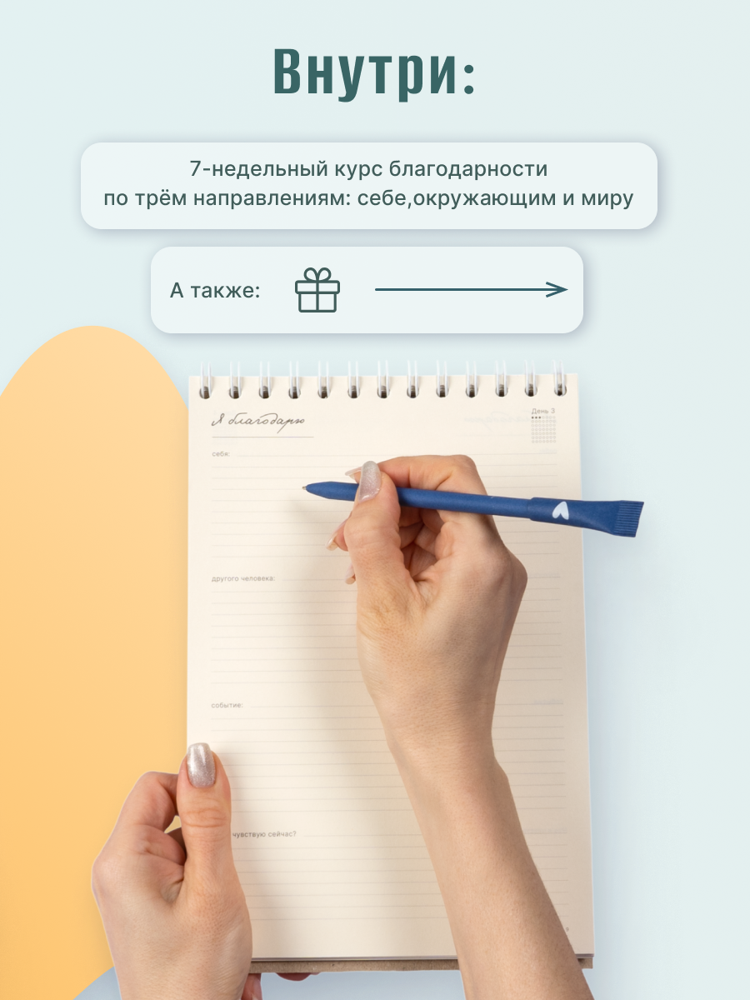
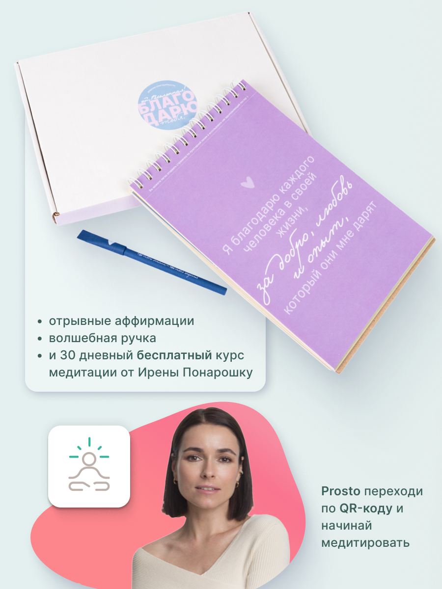
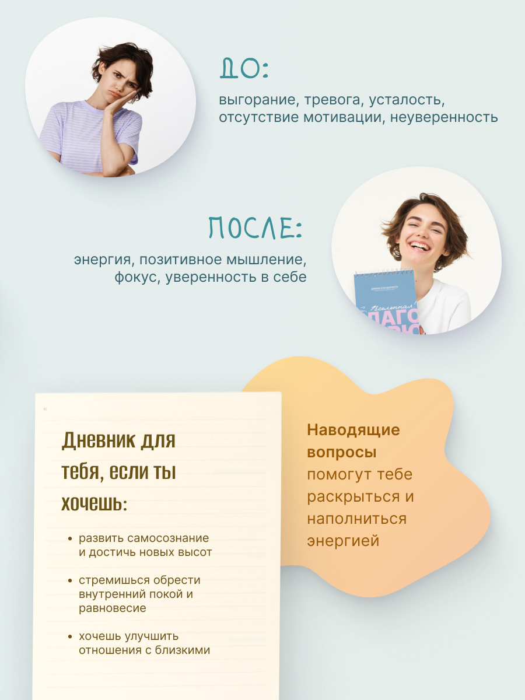
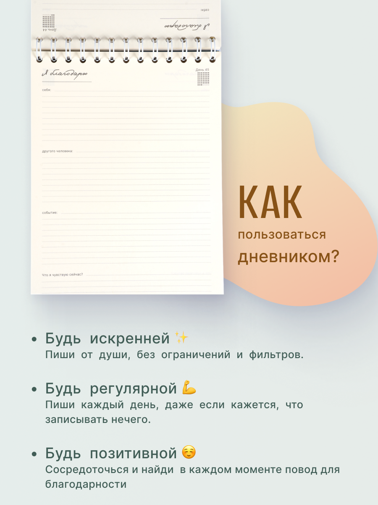
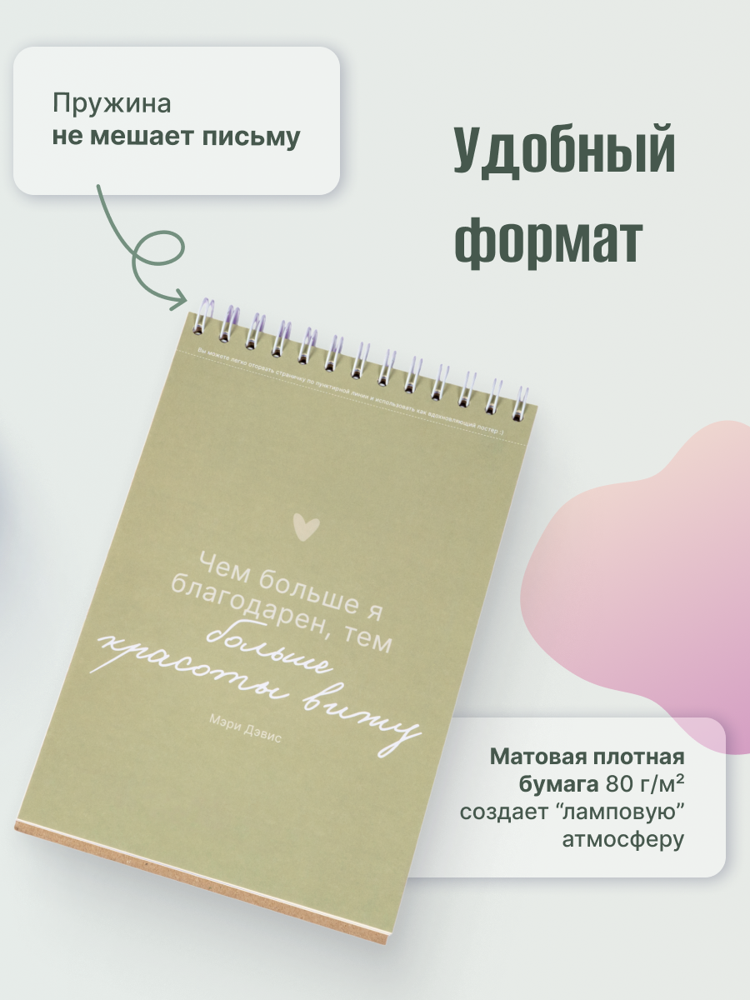
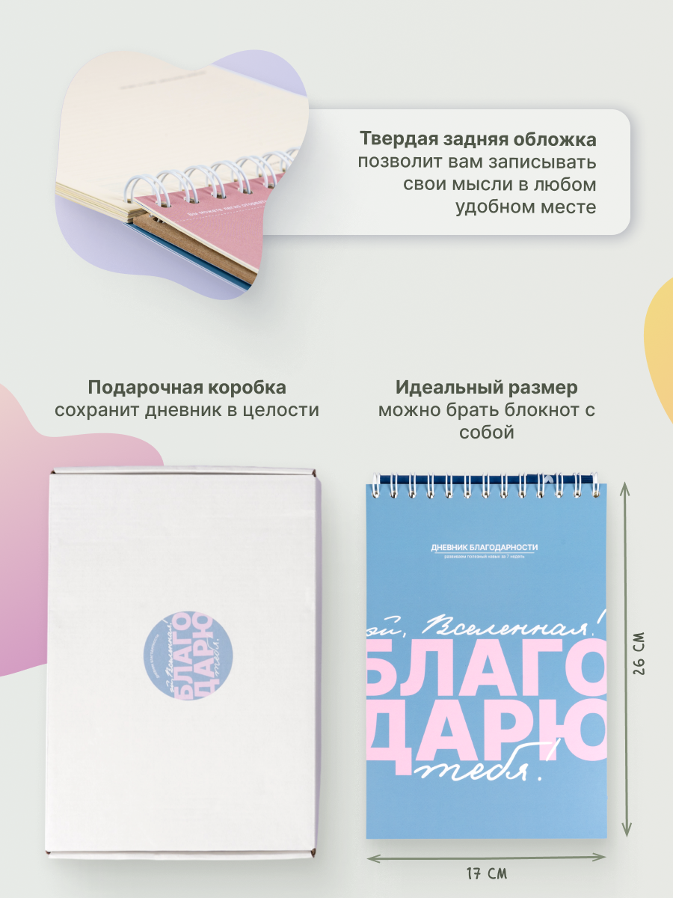
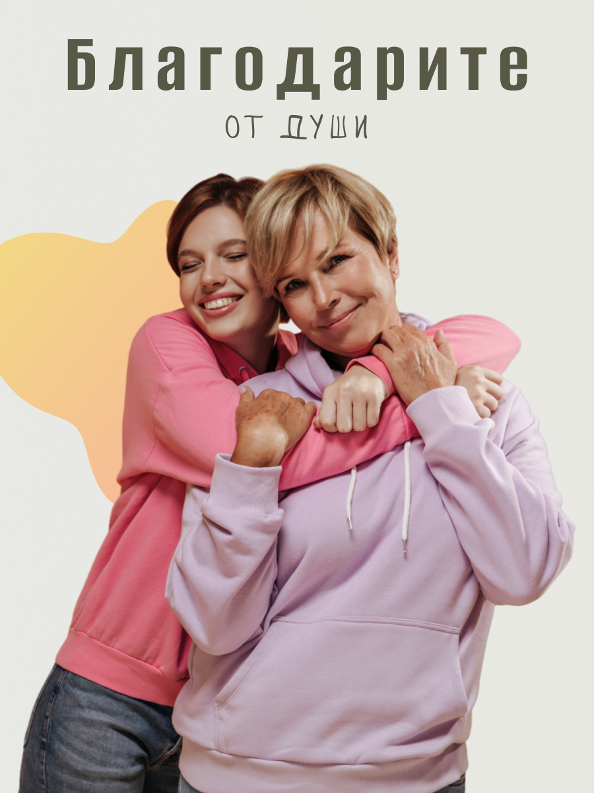
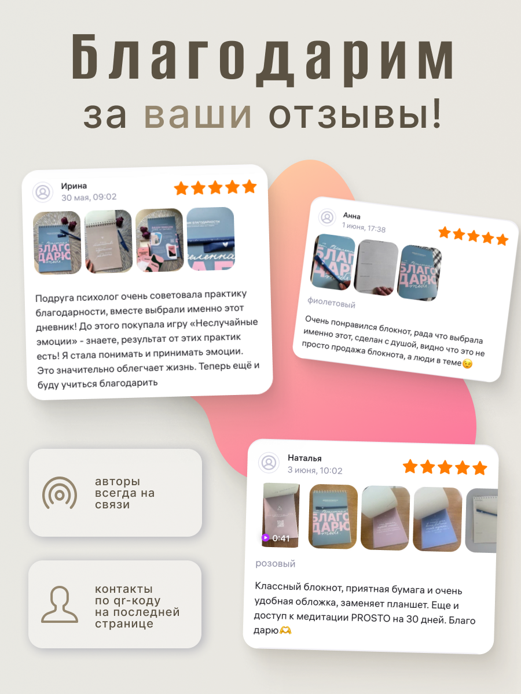
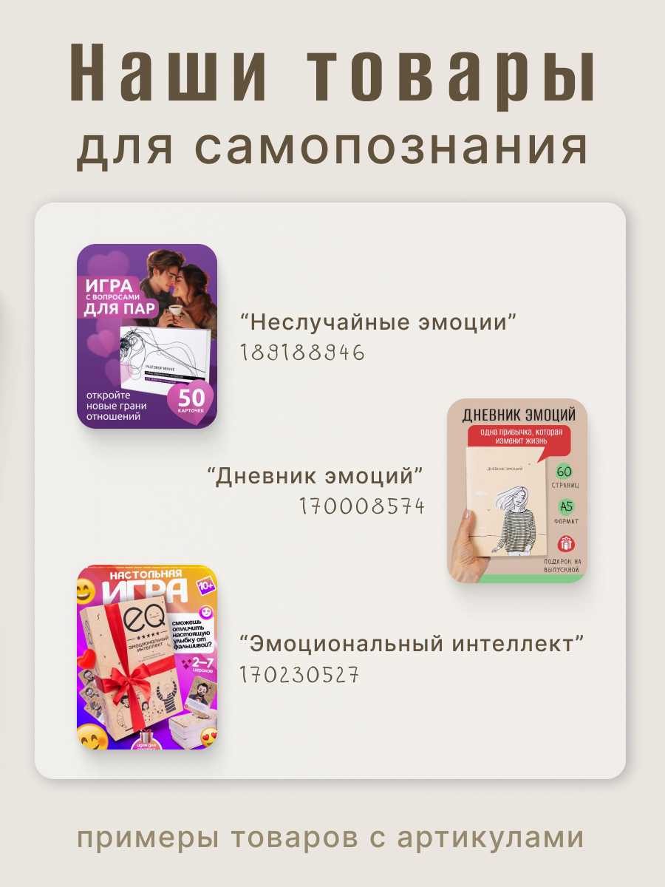

Полная карточка товара для маркетплейса: 10 инфографических слайдов, которые проводят покупателя от первого впечатления до решения о покупке — без единого слова от продавца.

На Wildberries решение о покупке принимается за секунды пролистывания ленты. У продавца нет консультанта, который расскажет о товаре, — есть только карточка. Значит, она должна сама объяснить, что это, зачем это нужно и почему стоит купить именно здесь.
Десять слайдов выстроены как воронка: сначала цепляем обещанием результата и авторитетной методологией, затем показываем содержимое товара, дальше — эмоциональный контраст «до/после», практическая инструкция, детали качества и размеров, лайфстайл-кадр, социальное доказательство отзывами и в конце — мягкий кросс-сейл других товаров бренда.
Внимание и содержимое
Польза и детали
Доверие и продажа
Мягкая пастельная палитра — голубой, розовый, персиковый — вместо агрессивных маркетплейс-цветов, органичные формы вместо строгих прямоугольников. Это работает на саму идею продукта: дневник благодарности — про заботу о себе, а не про срочную распродажу.








